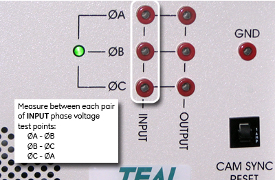

Illustration 5: Old Style PDU test points

| NOTE: | The test points are 100:1 ratio (480 VAC = 4.80 VAC, 208 VAC = 2.08 VAC). Therefore, a low voltage reading still indicates the presence of high voltage. Your voltage reading for each of the three phases must be 0 VAC before proceeding. |
Input Voltage Range: 380 - 480 VAC = 3.8 - 4.8 VAC
Output Voltage Range: 208 VAC = 2.08 VAC
Illustration 5: Old Style PDU test points
Illustration 6: New Style PDU Test Points
